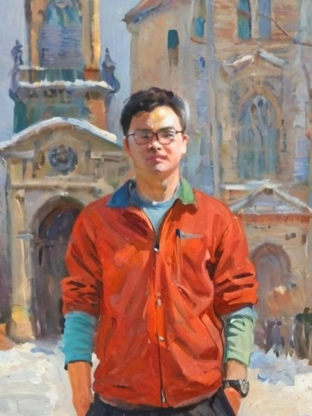

Yichao Cai
Ph.D. Candidate · Australian Institute for Machine Learning, University of Adelaide
Hello, I am a third-year Ph.D. candidate at the Australian Institute for Machine Learning, University of Adelaide, advised by Prof. Javen Qinfeng Shi, Dr. Zhen Zhang, and Dr. Yuhang Liu. Previously, I received my B.Eng. and M.Sc. from Wuhan University of Technology, where I was advised by Prof. Xiao Zhou.
My research focuses on multimodal representation learning and principled disentanglement. I study identifiability, causal reasoning, and language as an inductive signal to build explainable systems that uncover the semantic structure underlying complex visual–language data.
News
-
Excited to share that our work on cross-modal misalignment was selected as a Spotlight (top 3.2%) at NeurIPS 2025!
-
Check out our new preprint: "On the Value of Cross-Modal Misalignment in Multimodal Representation Learning".
-
Our work, "CLAP: Isolating Content from Style through Contrastive Learning with Augmented Prompts", is accepted to appear at ECCV 2024.
Show more
Selected Publications


Teaching
- Head Tutor, Statistical Machine Learning (Semester 2, 2025) @ The University of Adelaide
- Teaching Assistant, Using Machine Learning Tools (Trimester 2, 2025) @ The University of Adelaide
- Teaching Assistant, Concepts in AI and ML (Trimester 1, 2025) @ The University of Adelaide
From the blog
Short notes and essays on multimodal & causal representation learning.
Contact
Email: yichao.cai@adelaide.edu.au
Office: LG.25.04, AIML Building, Lot Fourteen, Corner of North Terrace & Frome Road, Adelaide SA 5000, Australia